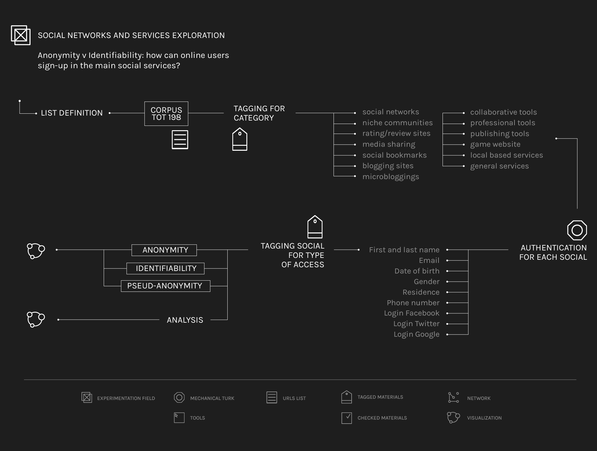

Defining the list of social services
At the beginning of this exploration it has been necessary to define the list of social services to analyze. Googling “list of social services”, it has been chosen to use a Wikipedia list of social networking websites. Since some important and popular social networks were absent, it has been decided to integrate it with another list in order to obtain a complete view of the existent social services. Some other social networks which emerged in the previous research have been added too. By trying to connect manually to each social, it has been possible to understand which are the information required by them: first and last name, email, date of birth, gender, residence, phone number, login Facebook, login Twitter, login Google. Closed, unattainable or non-explorable social services have been deleted from the list. Mandatory and optional personal data required by any social service have been reported in the dataset with different symbols. It has been verified if a social network asks the user first and last name or if it asks only a username during the registration. The social networks which ask the users first and last name during the registration but allow them to use a username have been indicated with another tag. Thereafter, every social service has been categorized by typology and by type of access. For this last categorization we intend “Anonymity” when a social network asks the user a username, “Identifiability” when it asks the user first and last name and “Pseud-anonymity” when it asks first and last name during the registration but after that it allows the use of a username.
